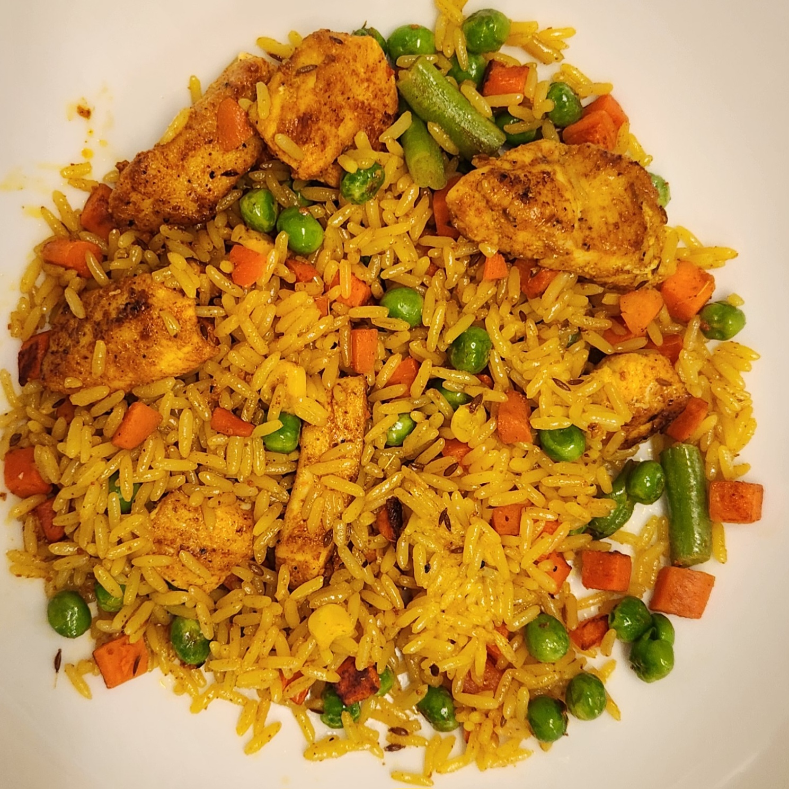

Fried Rice

Description
This is a really simple and quick meal to make! Even a beginner can make it.
You can toss everything around in one pan. Not much work to clean!
Ingredients
- 1.5 cups leftover white rice
- 5 ml light soy sauce
- 3 cloves garlic, diced
- 1 cup frozen mixed vegetables
- ½ teaspoon turmeric powder
- 1 teaspoon smoked paprika
- 100 g chicken breast, cubed
- ¼ teaspoon salt
- 1 teaspoon ground white pepper
- 1 tablespoon cooking oil
Steps
- Heat oil in a pan.
- Season the chicken with turmeric and paprika.
- When the oil is hot, add the chicken to the pan.
- Flip the chicken to the other side to cook evenly.
- Take the chicken out and add the garlic.
- Cook the garlic until fragrant thenadd the frozen vegetables and leftover rice to the pan.
- Add the soy sauce, salt and white pepper.
- Serve while hot!